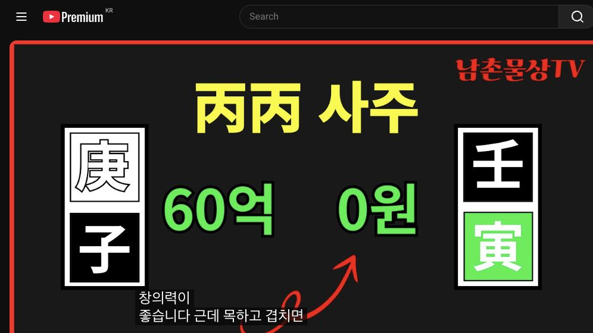

남촌물상TV 전체 문서 › 동영상 V0094
병병 사주 한 방에 날린 60억, 한 번의 실수 시기는?

| 문서 번호 | V0094 (동영상) |
|---|---|
| 영상 URL | https://www.youtube.com/watch?v=itO3aK33rHM |
| 영상 ID | itO3aK33rHM |
| 게시일 | 2024-09-23 |
| 길이 | 21:50 (1310초) |
| 조회수 | 2,598회 (수집 시점 기준) |
| 카테고리 | Howto & Style |
| 자막 | ko (자동생성) |
| 수집 시각 | 2026-08-30 17:03 (KST) |
영상 설명 (YouTube 설명 원문 그대로)
병병 사주, 한 방에 날린 60억, 한 번의 실수를 저지른 시기는 언제인가? #사주풀이, #병병사주 #사주팔자
전체 자막 (479구간 · 타임스탬프 클릭 시 해당 장면으로 이동)
[0:00]이게 이것이 때문에 그런 거야인
[0:02]때문에 이것만
[0:07]없으면 병화 일주가 뭐 재를 깔고
[0:10]있으면 좋다 관을 깔고 있면 좋냐
[0:11]이제 이런 것을 설명을 드렸는데 런
[0:14]사주 같은 경우는 이제 확실하게 팁을
[0:16]한번 줘야 돼요음 그전 안 했던 것을
[0:19]해 준다 그 말이에요 그러면 우리가
[0:22]그 생각할 때 아 병병 사주다 그러면
[0:26]이제 어둡다 이제 이런 정도는
[0:28]기본적으로가 거의 다 알고 있어요
[0:30]있는데 어 내가 병일 때와 일간이
[0:34]병일 때와 또 병신이 있을 때 그
[0:37]차이점을 으시고 설명하시 제일 좋아요
[0:40]그다음에 병화 일간은 제 2인자라고
[0:44]그랬잖아요 항시 2인자 이인자 역할이
[0:47]잘할 수 있는 사람이다 이제 이렇게
[0:49]그 봐야 되는데 이사주 특성이 병호
[0:53]기회 경인에 그러니까 대부분이
[0:56]봤을 때 아 제복이 굉장히 좋고
[0:58]사업성이 좋다 이렇게 이해 있어요
[1:01]근데 문제가 있는 거예요 문제가이
[1:04]사주가 그러면 이런 사람들이이 연애가
[1:07]병호가 있고 자기가 병신이기 때문에
[1:09]어둡다이 사주 딱 단점을 얼른 눈으로
[1:12]딱 들어야 됩니다 단점이 뭐가 있어요
[1:16]단점이 사주 그이 오행 단점이 어떤
[1:18]것이냐고 이거 얼로 말지 본인들이
[1:20]알야 돼 이게 이게 문제지 이게 기토
[1:23]이게 이게
[1:25]문제라고 그 이게 이게 핵심적인
[1:28]문제는 여기 있는 거고 또 자
[1:35]쌍일차
[1:37]자기가 재물을 충분히 깔고 있지만
[1:41]연애 병호가 호슬로 하면 어디가
[1:45]밝아져요 여기가 밝아지지 그럼 밝아진
[1:48]사람이 재물을 치하는 사주다 이렇게
[1:51]보셔야 된다 그 말입니다 그 이거
[1:54]확실히 여러분들이 알고 계셔야 돼요
[1:56]이걸 헷갈릴 수가 있어 왜 공부할 때
[1:59]제가 봤을 때 왜냐 재를 깔고 있는면
[2:01]돈을 잘 벌고 관을 깔고 있을 때는
[2:03]뭐 이렇게 설명을 많이 했어요 근데
[2:05]이런 경우를 얘기하는 겁니다 그러면
[2:09]병화는 밝을 때 능력을 발휘하는 거죠
[2:13]병화가 어두우면 태양이 어두우면 안
[2:15]돼요 그까 이제 이렇게 봤을 때 어
[2:19]병호 기해 병신인데 재물은 다 여기
[2:23]있잖아요 그죠 재물은 다 내 영역이
[2:26]있으니까 재물복이 좋다라고 할 수
[2:28]있어요
[2:30]근데 만약에 예를
[2:32]들어서이 병화가
[2:35]밝아지면이 재물이 다이 사람 거 갈
[2:38]건데
[2:39]그럼이이이 부인 자리도 이동할 수
[2:43]있죠 그래 안 그래 이런 것까지도
[2:46]여러분들이 생각할 줄 알아야 돼
[2:49]그러면이 사람은 잘못하게 되면이
[2:53]병화가 밝아질 때 내 만이라도이
[2:56]사람이 취할 수 있어 이렇게 결혼해도
[2:59]결과적으로 마나를 뺏기는 사주가 되는
[3:01]거지
[3:02]간단하게 그래서 이제 이런 걸 가지고
[3:05]여러분들이 쉽게 이해하고 설명할 줄
[3:07]알아야 된다 그 말입니다 오늘 굉장히
[3:10]제가 좋은 그 추석 선물 드리는
[3:12]거예요 이건 전혀 강의 안 했던
[3:15]내용인데 저는 많은 사람을 임상을
[3:17]해서 여러분들이 가장 정확한 답을 줄
[3:21]수 있도록 해주는게 제 임무기 때문에
[3:23]어 제가 임상하 않는 것은 정확 답을
[3:26]안 해요 그래서 정치인 사주가 됐든
[3:29]누구든 내가 직접 풀어보지 않는
[3:31]사주는 인정을 안 한다 그러면이
[3:33]사람이이 관이 지금 어디 있어요 관이
[3:37]해수가이 관이죠 자 해수가
[3:41]관인데 자 관 입장에서 보면은 문제가
[3:44]있죠 자 그러면 천간에서 관을 끌어온
[3:49]자가 있어요 없어요 없죠 없잖아요
[3:53]그러니까 지지에만 있는 아버지 내
[3:55]관이야 그러면이 관도 시계에서
[3:59]아버지라고 하지만 일자
[4:00]여기에서는 나의 나와 같이 동일한
[4:03]사람이
[4:05]아버지야 내가 병용하면 위에 있는이
[4:08]병도 아버지로 볼 수 있는 거예요
[4:10]그래서 내가 엄마면 여기도 엄마라고
[4:13]볼 수 있는데 내가 나면 엄마라 볼
[4:15]수 있는 거예요 나하고 똑같은
[4:18]사람이면 결과적으로 같은 사람으로
[4:20]보다 근데 에에 우리가 그 고전에서
[4:25]보면은 겁제니 내 것을 뺏어가 하고
[4:29]이렇게만 배웠다 말이에 그래 이론이
[4:31]맞지 않는뿐 아니라 또 때로 가서는
[4:34]그 겁쟁인데 등락 해오면 좋다라고 한
[4:37]경우도 있잖아요 관목인 뭐어 겁재가
[4:40]됐든 뭐가 됐든 등락 개업하 좋아
[4:43]그거는 좋고 왜 겁재는 내 걸
[4:45]뺏어가고 그러냐 그 말입니다 그래서
[4:48]이론이 정확하게 정립이 안 되는
[4:50]경우가 고전이 하다 있다 그래서이
[4:53]물상을 할 때는 고전을 내려놓아야 돼
[4:56]내려놓고 여기 관계성 가지고 본인들이
[4:59]이해하려고 노력을해야
[5:00]자꾸 고전을 대입시 보면 정확한 답을
[5:04]얻을 수가 없다라고 봅니다 자
[5:06]그러면은 자이 관이 관이라는 것도
[5:09]이것도 관도 관이 아니에 어쨌든간에
[5:11]그러면 이제 인신 사회로 돼 있는
[5:13]거예요 그죠 자 인신 사회의 지주가
[5:16]돼 있다는 얘기는 뭔가이 사람은
[5:20]활동적이다
[5:21]근데이이 병화 일주이 대부분이
[5:24]창의력이
[5:26]좋습니다 근데 목하고 겹치면 더
[5:28]좋아요 근데 이 사람은 병변이
[5:32]창의력은 좋은데 탁수의 개인성을
[5:34]가지고 있다 탁수의 개인성을 가지면
[5:37]창의성을 가지고도 결과적 뺏길 수
[5:39]있는 거죠 그러니까 본인이 모든 것을
[5:43]개발하고 재물을 만들어도이 재물이
[5:45]돼도이 병화가 인호 수이나 밝아질
[5:49]때는 내 재물과 내 명예도 다
[5:52]가져가게 된다 그거입니다 그럼이
[5:54]자리가 누구 자리 대기업 자리나 국가
[5:58]자리 아니에요 그러니까이 사람은
[6:00]대기업도 좋지만 국가를 이용을 해서이
[6:04]오화 국가를 이용을 해서 밝아진 것을
[6:08]내가 써먹어야 되는데 그렇지 못해 왜
[6:12]이게 이것이 때문에 그런 거야인
[6:14]때문에 이것만 없으면 인이라 글씨만
[6:18]없으면 자기가 차지할 수가 있어요
[6:20]근데 인이라 글씨가 있어서 술로 밝은
[6:25]역할을 해주고 있다 그렇기 때문에
[6:27]내가 아닌 타인이 밝 있는 사주로
[6:31]본다 그래서 문제가 있는 거예요 그러
[6:34]이런 사람들이 이제 고지 보면 아
[6:36]사주 괜찮은 사야 돈 벌고 괜찮아
[6:38]이렇게 얘기하지만 원칙을 까놓고
[6:41]보면은 그렇게 안 맞는 겁니다 그
[6:44]여러분은 현실적으로 우리가 사주 볼
[6:46]때 이러한 개념을 정확하게 이해를
[6:49]하셔야 확실한 답을 줄 수가 있는
[6:52]거예요 저는 제가 실관 하지 않는
[6:55]거에 대해서는 거의 답을 안 줘요 자
[6:57]그럼지지
[6:59]행동에서는 굉장히 사람이 활동적이고
[7:01]좋다 이렇게 봐야죠 그럼 자 사주는
[7:04]굉장히 청한 사주로 볼 수가 있지만
[7:06]탁수가 되는 개연성을 가지고 있는
[7:09]거죠 이게
[7:11]문제죠 그러면 여기서 좀 봅시다
[7:14]그러면 문제가 될 때가 언제
[7:16]겠느냐 자 첫째 호수의 될 띠를
[7:20]찾아봐라 지지로 호수 될때 찾아봐
[7:23]그럼 항시 먼저 봐야 되게 여러분들이
[7:24]사주 보실 때 어떻게 냐면 거기
[7:26]장단점과 단점 얼른 눈에 들어오면
[7:29]어느대 는가 먼 체크 해봐야 돼 그럼
[7:33]이노수도죠 그죠 자 이노이 왔어요
[7:37]그다음에 또 어어 제일 좋 때는 건
[7:40]언제느냐 졸
[7:42]때 어 어디 병호 아 병호는 여가
[7:47]밝아지니까 내것 내가 뺏기는 건데 뭘
[7:50]좋아 수리병 해도 뿌리가
[7:54]여긴데 자 그래서 어두움이 좋은
[7:56]거예요 어두울 때 같이 동일하게
[8:00]어두울 때는 어두울
[8:01]때는 상관없어 근데 지금 우리 저
[8:05]상서 착각하는 이유가 병호 좋은 거
[8:08]같도 돼요 얼론 맨날 들었기 때문에
[8:10]여러분들이 밝아야 좋다는 기억을
[8:13]들었는데이 사주 특성은 밝으면 내가
[8:16]뺏기는 거야 그렇잖아요 자 밝 내가
[8:20]밝아졌는데이는 어두워 내가 밝아지면이
[8:23]재물도 나한테 오는 거예요 쉽게
[8:25]뺏기는 거라고 재물도 뺏기고
[8:27]내만으로도 뺏기는 거 알고 보면 더
[8:30]들어가자 보면 이제 이런 것을 오늘
[8:33]핵심적으로 여러분들이 잘 기억을
[8:35]하는데 그러면 만약에 내가 사업을 한
[8:37]사람이라면 사업한 사람이라면 이런
[8:40]사람을 데려다 이용을 하면 되냐 안
[8:42]되냐
[8:43]정구보 괜찮죠 더군다나 병화 일관
[8:47]자체는 인자란 말이에요 자기건 잘못도
[8:50]남무 거 일하건 잘하는 사람들이야
[8:52]그래서 봉급쟁이 사장으로 가면 기가이
[8:55]잘하는 사람들이 병화
[8:56]일반인데이 경우를 채용으로 하면
[8:58]굉장히 덕을 본 사람들 죠 채용에
[9:01]쓰면이 사람 껏 내가 갖다 이용해
[9:04]먹을 수 있지 그 이런 것을
[9:05]여러분들이 보시고 어 직업관의 직업
[9:09]지금 직원들 뽑는 거 있잖아 우리가
[9:11]자 사장이 온화하고 직원의 전무하고
[9:13]상무를 뽑을 때이 사람하고 관계성을
[9:16]봤을 때 이런 사람들이 내 사주 잘
[9:18]맞으면 돈 잘 벌는 사람이 되는 거야
[9:20]그래서 우리가 제가 하는 일이
[9:23]기업간의 기업의 오너와 회사의 직원
[9:27]뽑는 걸 제가 하고 있습니다 어 1년
[9:29]그래도 그 제가 관련 회사 한 두 개
[9:31]있으니까 그 회사에서 1년에 꼭 직원
[9:34]뽑을 때는 소리가 오지 그래서
[9:36]검증해서 그 저희가 주거든요 주는데
[9:40]그럴 때 그 서류에 제가 뽑아라 말을
[9:42]할 필요는 없어요 단지이 사람은 어느
[9:45]연도 가게 회사를 그만둘 것이고
[9:47]본인의 회사를 설립할 것이고 어느때이
[9:50]사람 충성할 사람이 아니라 구별해서
[9:52]그것만 써주면 되는 거예요 뽑고 안
[9:54]뽑고는 그 회사 재량이지만 근데 거의
[9:57]제가 써 준 대로 하죠
[10:00]이게 이제 우리가 할 일이에요 그래서
[10:02]여러분들이이 공부를 해서 가볍게 사주
[10:05]하나 본다는 개념을 버리고 뭔가 크게
[10:08]생각한다면 기업체를 가지고 움직이
[10:10]사람을 상대로 해서 이런 사람들의
[10:13]직원 채용이라 그가 경영의
[10:15]방법이라든가 투자의 요건이라 그가
[10:17]이런 것을 상담할 수 있는 여건 정도
[10:20]수준이대 주시한다 그 말입니다 그래야
[10:23]지대로 된 상담까지 그저 단주 사조나
[10:26]보고 뭐 돈 오만나 보시면 이게
[10:28]문제가 아니에요 우리는 업적인
[10:30]기업적인 책에서도 좀 더 넓게 폭넓게
[10:33]뭔가를 관리할 수 있고 내 자식
[10:35]하나라도 내가 봐서 올바른 길로
[10:38]인도할 수 있다라고 하는 그 개념을
[10:40]가지고 보시면 여러분들 얼마나 큰
[10:42]덕이 될 수 있겠어요 자 그러면
[10:45]지금부터 이제 봅시다 그러면 이제
[10:47]어두울 때면 동일하다 그렇잖아요 너도
[10:51]동일하고 나도 똑같아 그럴 때 내가고
[10:54]내가 지킬 수 있죠 그렇잖아요 근데
[10:56]나는 어둡고 상대는 더 밝아졌어
[10:59]그러면 그 밝은 사람이 가져가는 거지
[11:02]이제이 원칙을 여러분들은 반드시
[11:04]기억에 담으셨다 활용하셔야 된다 그
[11:07]말입니다 그게 가게 안 하는 설명을
[11:10]제가 해 드리는 거예요 한 번도 제
[11:11]안 했을 거예요 아마 저 기억이 안
[11:13]하는 거라 그러면 이런 것을 가지고
[11:16]여러분들이 이제
[11:22]응용하셔서 기 병원 이때 봅시다 병
[11:26]자 병원이에요 자 병이 우 가 좋다
[11:30]그랬어 그럼 자 세 개가 됐잖아요 세
[11:34]개가 세 개가 됐으니까 하나가 됐을
[11:36]거 아니에요 3대 1 하나 그러 제
[11:38]여기에서 인술이 됐잖아요 그러면
[11:42]이거는 국가 자리 대기업 자리가
[11:44]밝아지는 거죠 그요 그러면 지금
[11:47]사업한 사람이 만약에이 사람을 지금
[11:50]58세 59세가 데리고 있다면 2
[11:53]3년 후면이 사람이 용 돈이 됩니다
[11:56]그럼 너는 뭘 할 건데 이런 사람들이
[11:59]쉽 위해서 어떤 아이디어를
[12:02]개발해서 국가에 대한 영구 자금을
[12:04]끌어낼 수 있는 사람이 되는 거예요
[12:06]그 우리들이 이제에 기업자 그 뽑을
[12:10]때에 자기 어떤 특유의 뭔가를 만들어
[12:15]놓으면
[12:17]얼마든지 국가에서 지원을 받을 수
[12:19]있듯이 이런 사람 할 수 있는
[12:21]사람들이에요 이런 사람 끌어다 쓰면
[12:23]되는 거예요 자 그다음이 사람이
[12:25]국내에 있을 때는 이제 여기까지예요
[12:26]국내에 있을 때는 근데 만약에 이
[12:29]사람의 팔자라 바꿔 준다라고 계산해
[12:31]보자 우리가 우리는이 사람을 어떻게
[12:34]하면 내가이 사람 우리 아들이라고
[12:35]생각해 봐 그 우리 아들을 키울 때
[12:38]어떻게 키워서 이해를 성공시킬 수
[12:40]있겠냐고 생각해 보자 그 말입니다
[12:41]이것이 핵심이에요 자 그러면 여기에
[12:44]이제 병화가 하나가 더 간다는 얘기는
[12:47]애국을 간다는 얘기죠 그죠 자 애국을
[12:51]간다면 우리는 태양이 하나 더 뜬
[12:54]걸로 보시라 그 말했어요 더 가게
[12:56]된다 그러면이 사람이 애가 태이 세개
[13:00]하나가 밝아졌다 그죠 밝아졌어요
[13:03]그러면 그때는 저 병호가 밝아졌지만
[13:08]타이 나라에 가서 밝아지는 거예요
[13:11]그러면 그건 상관없어요 뭔 얘기
[13:13]아시겠죠 세계가 밝아졌다는 얘기는
[13:16]애육 하면 너는 이런 국가적인 일로서
[13:19]밝아질 수 있어라고 얘기하시면 되죠
[13:22]그다음 본인이 본인이 이제 아까 제가
[13:26]문제점이 뭐라
[13:28]그랬어요이 핵지 사주 문제가 제일 안
[13:31]좋은 씨가 무토 기토라 그랬어요
[13:33]기토가 이제 이게 무토가 하나 생길
[13:35]거 아니에요 애국의 대륙을 낀 나라를
[13:38]가게 되면 무토가 하나 생긴다이
[13:41]무토가 생긴다 넓은 땅을 가진 나라로
[13:43]간다 그 말이에요 그러면 자이 사주에
[13:46]넓은 땅이 하나가 생겼다고 보고 그죠
[13:50]보고 애국을 가기 때문에 임수의 물이
[13:53]하나 생긴 거예요 예을 가게 되면
[13:55]그러 여기 임수 물이 하나 생겨
[13:58]가정합시다
[14:00]그러면 자 3대 1로 태양이 뜨고 자
[14:05]못들어서이 임수의 물을 재방을
[14:07]막아주고 태양이 뜻 우리의 비치니
[14:11]나에 대한 영향이 최대로 발휘할 수
[14:13]있다라고 본다 그렇죠 자 그러면이
[14:18]사람은이 뿌리가 목이란 것이가 있어요
[14:21]그럼 뿌리가 있다는 얘기는 저 기토
[14:24]갑목을 끌어올 수 있다는 얘기예요
[14:25]그러면 자 공부를 하게 되면 잘라 못
[14:27]해 잘하게 된다 통명 된다 그 말이야
[14:30]그러면이 사람은 만약에 목화 특명이
[14:33]잘 돼서 공부를 많이 했다고 과정 뭘
[14:35]할 건데 그 말이에요 뭐 할 건데
[14:38]어떤 일 할까요 자 여기 일이 2사
[14:42]돼 있잖아요 너는 마케팅 전략을 잘
[14:45]할 수 있어 이거 아닙니까 그러
[14:48]마케팅 전략을 잘할 수 있고 신자
[14:51]임수가 온다고 봐요 임수 신자진
[14:53]된다고 보면 또 유통업 잘할 수 있어
[14:55]그럼이 사람은 기업가로 선정할 수
[14:57]있어 없어 있다 이렇게 이제 우리가
[15:00]그 애국을 네가 만약에 학교로 가게
[15:03]되면 애국에 살게 되면 이러 이러한
[15:05]관계 성으로서 너는 크게 성공할 수
[15:08]있다라고 얘기할 수 있는 거예요
[15:11]그러면이 사람은 한국에 지금
[15:14]자기가 돈 벌고 해서 나무 존니만
[15:17]식었다가 외국에서 만약이 사람이
[15:20]생활을 하고 학교를 다녔다면 이렇게
[15:22]바꿔질 수 있다라고 본다 그 말입니다
[15:25]그래서 팔자는 바꿀 수가 있다라고
[15:28]저는 확신해요
[15:30]그래서 어떤 환경에서 살았냐 해 어떤
[15:35]환경에서 그러 새로운 환경에 살다
[15:37]보면 사람이 새로운 아이디어도 생길
[15:40]수 있고 새로운 뭔가를 개발할 수
[15:41]있는 거예요 우리 어머니가 주는 반모
[15:44]계속 그 집에 살아 그럼 맨날 반복된
[15:46]세계예요
[15:47]그런데 새로운 땅에 갔을 때는 새로운
[15:50]문화와 새로운 자기 환경을 적응하게
[15:55]살기 위해서는 뭔가 또 다른 생각을
[15:58]가질 수밖에 없다
[16:00]그래서 달라지는
[16:01]거예요 그래서 더 공부를 열심히 해야
[16:04]돼 안 해야 돼 하는 생각도 바뀌게
[16:07]된다 그 말입니다 자 생각이 바뀌면
[16:10]행동이 바뀌죠 그죠 생각이 바뀌어
[16:13]줘야만 행동이 바뀌는 거예요 그래서
[16:16]그러한 사고방식을 가질 수 있는
[16:18]역할이이 사람은 해외를 가서 살았다면
[16:22]굉장히 크게 성공할 수 있다라고 본다
[16:26]그래서 이제 우리들이 이제 그러면 저
[16:28]보통 그러잖아요 너 해에 가서 잘
[16:30]산다는데 교수님 무슨 해에가 뭐 할
[16:31]거 대요 이렇게 할 거 아니요네 할
[16:33]수 있는 일이 벌서 딱 정해진 거야
[16:35]지지의 인신 사의 마케팅 전략 신자진
[16:38]됐을 때 너는 유통업 관계 그리고
[16:40]지지의이 금과 금의 나의 재물과
[16:42]재물을 깔고 있기 때문에 너는 큰
[16:44]재물 재사를 모을 수가 있어 이렇게
[16:46]간단하게 자 애국을 가면 대륙을 낀
[16:49]나라에 큰 무토의 땅으로 갈 것이고
[16:51]물을 건너가기 때문에 임수의 나라로
[16:53]갈 거라 그 말이야 임수의 물을
[16:54]가지고 있어요 임수가 되고 세계의
[16:57]태양이 하나가 합해져서 태양이 우리
[16:59]때 나의 빛이 빛나는 거죠 그죠
[17:02]그러니 마 얼마나 좋겠어요 내 명예와
[17:07]내 재물을 다 취할 수 있게 된다 그
[17:09]말이야 그러니까 돈과 명예를 걸기
[17:11]위해서는 국에서 생활하거나 학교
[17:15]유학을 갔다면이 사람은대 성공할 수
[17:18]있다 이렇게 본 겁니다 그래서 지금
[17:21]이제 시대는 여러분들이 상담할 때
[17:24]학생들도 외국의 개념도 상담해 줘야
[17:26]되고 네가 어느 나라 가면 좋다는
[17:28]것도 해줘야 되고 이런 시대가 와
[17:30]있어요 그래서 고전에서는 그 어느
[17:33]나라가 그런 것이 없어요 우리 물상
[17:35]다 제가 정한 대로 공부하시게 되면
[17:38]다 설명을 드리기 때문에 우리 박사
[17:39]선생님이 잘하는 거예요 그래서 학교
[17:41]앞에서 인기야 왜 학교를 다치
[17:45]뽑으니까 각 학교 미국 가라 영국
[17:47]가라 뭐 일본 가라 가서 뉴 차를 내
[17:50]마주해 마주 한다 그 말이야 계수
[17:52]1관이 갈 때는 어디로가 어디로 가다
[17:54]그랬어요 계수 일 간라 섬나라 섬나라
[17:57]그랬잖아 영국 호주 이 해라 본
[18:02]간단하지 않아요 이미 정의 진대로
[18:04]여러분들은 그걸 활용해야 되면
[18:07]크게 상담할 때 도움이 크게 됩니다
[18:10]그 시대로 가주지 않으면 지금은
[18:13]고전에 그 시대를 가지고 설명하기가
[18:15]굉장히 어려워요 안 됩니다 안 통해요
[18:18]옛날 같은 시대로 계속하고
[18:20]있으면 절대 상담이 안 됩니다 지금은
[18:23]그 시대로 상하면
[18:25]돼요 자 그러면이 람 경 보고 지금
[18:29]여러분들 유인물 나눠준 거 보시면
[18:31]제가 다 설명을 자세히 썼어요 어제도
[18:33]제가 이거 어 오후에 이거 만드라고
[18:37]적신으로
[18:38]썼습니다 근데이 대원에서 보시면이
[18:41]사람이 말년 눈으로 가도 그렇고 이때
[18:44]이때 돈을 잘 벌 때가 한번 있어요이
[18:47]사람이 지금 지금 보세요 어 갑진대운
[18:51]있습니까 지금 어 운이죠 자 을사
[18:55]대운에서 돈을 잘 벌 때 언젠가 한번
[18:57]여러분
[18:58]찾아보세요 때 돈을 잘 벌 겠는가
[19:00]을사 대운에서 자 찾는 방법부터 먼저
[19:03]보셔야 돼 을사 대운이이 대운에이
[19:07]대운에 여러분들이 생각해요 어느이
[19:10]글씨가 지금 불사가 어디하고 미칠 한
[19:13]영향이 돼 있잖아요 그러면 너는 여기
[19:16]을경 합을 하는 얘기예요 이미 그럼
[19:18]너는 이때 이때 재물을 취할 수
[19:20]있어라는 얘기예요 그럼 왜 재물을
[19:22]취하냐 을경합 신금이 되면 저기
[19:26]경쟁자를 물리칠 수 있어 다 없
[19:29]그렇죠 물 수 있잖아요 그리고지지
[19:31]사오가 될 수 있잖아요 그러니까 너는
[19:33]애국을 거래하게 되면 너는 돈이 크게
[19:36]벌 수가 있어하는 때가 어느 어느에요
[19:39]어느 때 신축년 신축년 또 제가 아까
[19:43]얘기했잖아 몇년이 자 잘 봐요 여기서
[19:47]예측해 준 대로 가라 그 말이에요
[19:49]을경 합할 때가 어디요 경자고 경
[19:52]경제면지지 신자 지이지 유통으로 돈
[19:55]벌었다이 말이에요 그러면 어디서
[19:57]무토의 나라에 가서
[19:59]거기서 갖다 벌은 것 한 2년 사이
[20:02]60억을 번 사람이야 그래서 이런
[20:04]간단하게 설명할 수 있잖아요 대운에서
[20:07]예측을 어떻게 해 주느냐에 따라서
[20:09]그걸 먼저 짚어라 그럼 그 연도가
[20:11]어디서 미치는가 경경이다 아 경경동
[20:15]태양은 불로 녹일 수 있어 그
[20:17]말이에요 그러면 봐봐요 여기에서
[20:20]만약에 저 병화 병실 합을 하게 되면
[20:23]지지는 사움 있죠 내가 밝아지는
[20:26]거예요 이제는 뭔 얘기 하시겠죠음
[20:29]합을 해서 여기가 어두워지면
[20:32]뿌리는 사움 이잖아요 그럼 내가
[20:35]밝아지지 이때 신금 친자 지소 유통
[20:39]경금 재물을 취할 수 있다이 말이에요
[20:42]자 아까 신축 얘기하셨고 신축도
[20:46]제거하지아요 비견 경쟁자를 제거해
[20:50]그럼 사유축 인신 사회 아니에요 그럼
[20:53]그런 돈 버는 거 아니야 마케팅
[20:55]전략으로 돈 벌었다 그 말이야 처음에
[20:57]유통 쪽에서 가져다가 그다음에는
[20:59]마케팅 전략으로 돈을 본 사람이다
[21:01]근데 그 다음부터가 이제 문제지 이런
[21:04]사람들은 아까 처음 그랬잖아요 이것이
[21:07]한키 망할
[21:10]세라고
[21:12]이민죠 한키에 수버 한키 망해 그런
[21:16]거예요 그래서 한키 60억 다 날려
[21:19]이런 사주 눈에 여러분들이 쉽게 볼
[21:22]수 있어야 다
[21:24]됩니다 가장 쉬운 방법으로 대운에서
[21:28]네가 어떤 할 건데 그다음에 연도에서
[21:31]어느 연도에서 경인 그 경자년에
[21:33]시작을 해서 신축하지 돈을 벌고 임민
[21:36]년에요 탁수의 문제가 됐네 아 이때
[21:39]너는 망해 간단하게 볼 수 있는
[21:42]사주가이 사주를 가지고 여러분
[21:44]확실하게 알 수가 있다 그말입니다
[21:46]알겠죠 자 여기까지 와시다
[21:48]수고했습니다 감합니다
칠판 원국 판독 (영상 프레임을 AI가 시각 판독 · 원판 대조 필수)
구분 불명
천간
庚
천간
천간
壬
천간
지지
子
지지
지지
寅
지지
판독 신뢰도: 중간
판독 노트: 丙丙 사주 슬라이드: 4주 중 庚子·壬寅 2주만 표시, 60억 주석(寅 화살표). 일간/나머지 주 미표시 · 시점 5:28 · 해당 장면 보기↗
자막은 YouTube에서 제공하는 한국어 자동음성인식(ASR) 트랙의 원문입니다. 고유명사·한자 용어·숫자 표기에 자동인식 특유의 오류가 있을 수 있어, 원문을 가능한 한 그대로 보존했습니다. 위에 칠판 원국 판독 섹션이 있는 영상은 화면 프레임을 AI가 시각 판독한 것으로 신뢰도 표기를 확인하고, 없는 영상은 화면 도표가 문서에 포함되지 않습니다.